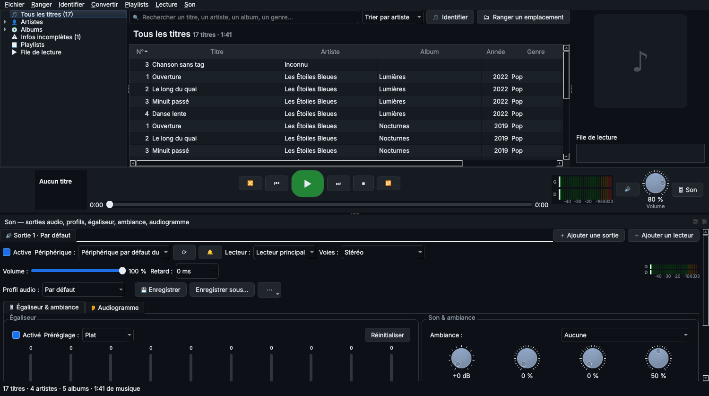

4. Bibliothèque et lecteur
La fenêtre Windows a trois zones : le classement à gauche, la liste des titres au centre, la pochette et la file de lecture à droite. La barre du lecteur est en bas.

La fenêtre principale : classement, liste des titres, lecteur et panneau Son.
Trouver un morceau
- Classement (à gauche) : Tous les titres, Artistes ▸ Albums, Albums, Infos incomplètes, Playlists, File de lecture.
- Recherche : tapez un titre, un artiste, un album ou un genre dans le champ du haut.
- Tri : par artiste, album, titre, année ou les plus écoutés. Un clic sur l'en-tête d'une colonne trie aussi.
- Les cases orange signalent une information manquante.
Lire
- Double-clic sur un titre : la liste affichée devient la file de lecture.
- Clic droit : Lire, Lire ensuite, Ajouter à la file, Ajouter à une playlist, Lire sur un autre lecteur, Identifier, Modifier les informations, Afficher dans l'Explorateur.
- Barre du lecteur : 🔀 aléatoire, ⏮ précédent, ▶ lecture et pause, ⏭ suivant, ⏹ stop, 🔁 répétition (aucune, toute la file, un titre), barre d'avancement, vumètre, muet, volume.
Playlists
- Playlists ▸ Nouvelle playlist (Ctrl+N), ou clic droit sur des titres ▸ Ajouter à la playlist ▸ Nouvelle playlist.
- Clic droit sur une playlist : Lire, Lire en aléatoire, Renommer, Exporter, Supprimer.
- Import et export au format M3U, compatible avec les autres lecteurs.
◀ 3. Premiers pas · Sommaire · 5. Ranger et classer un emplacement ▶